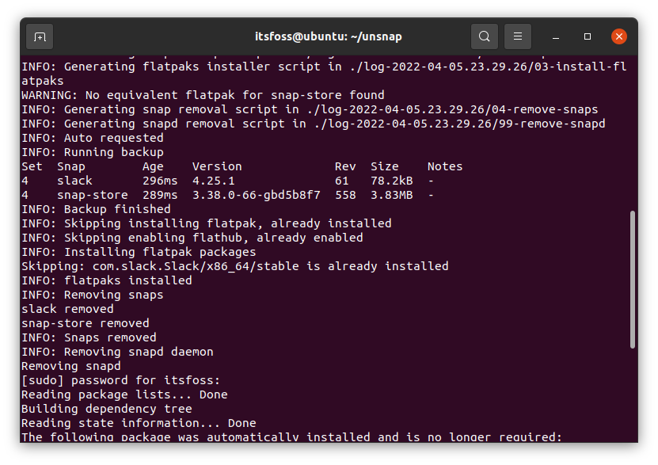
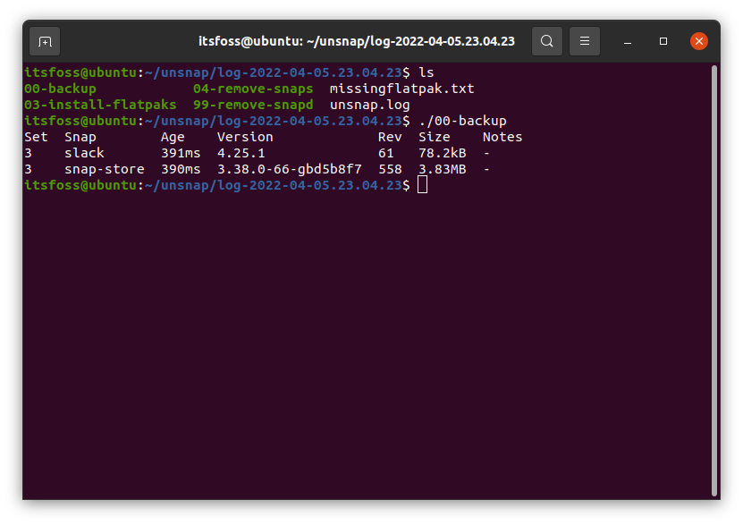

Ubuntu 的前 Snap 倡导者创建了一个工具，帮助你从 Snap 迁移到 Flatpak
| 2022-04-17 07:16 评论: 3
震惊！Canonical 的前 Snap 倡导者开发了一个工具，帮助你快速抛弃 Snap 并使用 Flatpak。
不喜欢使用 Snap？
好吧，你可以一直坚持使用传统的二进制包（deb/rpm），或者选择 Flatpak。
但是，如果你已经用上了 Snap 商店的应用，怎么办？
手动删除 Snap 应用，和 Snap 说再见，安装 Flatpak，并安装所有 Flatpak 需要的软件包，这将是非常耗时的。
这就是 “Unsnap” 派上用场的地方。
Unsnap 是一个开源工具，由 Canonical 的前 Snap 倡导者 Alan Pope 开发，帮助你从Snap 快速迁移到 Flatpak。
Unsnap：它是如何工作的
请注意，该工具仍处于前 alpha 阶段，你可以测试它，但如果你想实际使用并帮助改进，你可能要做一些研究。
基本上，该工具生成的脚本可以帮助你做以下事情（按特定顺序）：
- 备份现有的 Snap 软件包。
- 安装 Flatpak（如果尚未存在）。
- 启用 Flathub。
- 为 Snap 应用安装相同的 Flatpak 应用。
- 移除已安装的 Flatpak 应用的 Snap 应用。
- 删除所有 Snap 软件包。
虽然脚本是在你运行工具时自动生成的，但你可以选择手动或自动逐个运行这些脚本来切换到 Flatpak 应用。
如何测试 Unsnap？

看了上面的截图，你可能对它的实现方式有了一个模糊的概念。你也可以参考它的 GitHub 页面 了解最新信息。
作为参考，让我为你强调一下步骤：
1、克隆 GitHub 仓库
请确保你已经 在你的 Linux 发行版上安装了 Git。完成后，你可以输入以下命令：
git clone https://github.com/popey/unsnap
2、切换到该目录
当你克隆了仓库，你的系统上就会有 unsnap 目录。
输入以下命令切换到目录：
cd unsnap
3、运行该工具
在切换到目标目录后，只需使用命令运行 unsnap 工具：
./unsnap
它将检查现有的 Snap 和 Flatpak 软件包等等，进行设置。
正如你在上面的截图中注意到的，它已经检测到我的系统有了 Flatpak 环境，所以它跳过了为这些任务生成脚本。
在这个过程中，它还会了解你系统上安装的 Snap 应用，以便在你运行生成的脚本时找到相应的 Flatpak 应用。
如果你想立即运行所有的脚本，你可以输入：
./unsnap auto
如果你想要不使用自动选项进行控制，你可以发现生成的脚本驻留在一个日志目录内，如下图所示：

下面是你应该遵循的脚本的执行顺序：
00-backup01-install-flatpak02-enable-flathub03-install-flatpaks04-remove-snaps99-remove-snapd
在我的例子中，我已经设置了 Flatpak，所以我继续运行备份脚本，然后安装 Flatpak 软件包，如此循环。下面是它看起来的样子：

你应该记住，这个工具正在积极开发中，可能不会像预期那样工作。所以，你如果依赖众多的 Snap 应用，你应该在虚拟机或测试机上试验使用该工具，并等待该工具随着稳定版本的推出而改进。
请在下面的评论中告诉我你对 Unsnap 的看法。
via: https://news.itsfoss.com/unsnap-migrate-snap-to-flatpak/
作者：Ankush Das 选题：lujun9972 译者：geekpi 校对：wxy